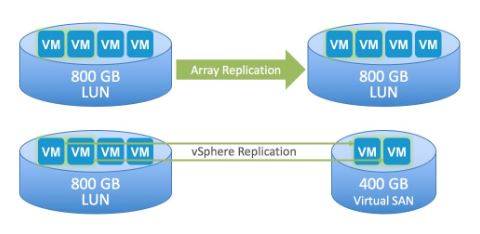

Professional Scope of Virtualisation in IT industry
This page aims to evaluate what virtualisation means for small size businesses, how it can improve their efficiency but also describes risks which may occure.
Evaluation of potential savings for small businesses
Virtualisation transformed datacentres and businesses all around the world. Recently is started drawing attention from small to medium sized businesses. Server virtualisations technologies enable improve efficiency, save energy and economically divide resources. It is often more difficult for smaller businesses to evaluate which virtualization platform would the most suitable. Although there are many similarities to enterprise sized businesses, for example high availability, backup or disaster recovery management, small businesses cannot afford to pay the same price like their enterprise counterpart. This study analyses virtualisation requirements for small size businesses, more specifically benefits of virtualised systems. Its goal is to evaluate potential savings and advantages for small businesses.
Why virtualise small size businesses
There are variety of reasons why small to medium size businesses moving towards virtualisation. One of the main reasons is improvement of server utilisation. According to VMware white paper (2009), 72% of all small businesses choses virtualisation for this reason, but it is not the only benefit. Virtualisation reduces number of servers, improves security, availability and uptime and helps with application management and improves data backup and protection.
Fast, flexible management enables reconfiguration and expansion easily and quickly, with automated support wherever needed. Adding resources to applications is possible without disrupting run of the application or end users. VMware solution offers hot-add feature, which allows administrators add disk space, CPU and memory allocation and is supported for any guest operating systems. According to VMware technical white paper (2011) Microsoft Hyper-V and Citrix XenServer does not support hot-add feature for virtual CPU or memory.
Videos below show examples of Virtualisation offerings for small to midsize businesses.
VMware Offerings for Small & Midsize Businesses
Virtualization for Small Business
Protecting assets and improving disaster recovery
Impact of disaster recovery can be very costly for many organisations. United States Department of Homeland security states, that around forty to sixty percent of small businesses never open again following a disaster. One of the most important assets when discussing disaster recovery is IT systems infrastructure including servers, hardware storage and software. Cost of physical disaster recovery sites was unreachable for small businesses and therefore this solution has not been implemented. This puts businesses in considerable risk. Virtualisation removes the need of hardware infrastructure by reducing physical hardware and moving applications to the virtual infrastructure. Virtual machines can be reliably powered on and used right after disaster happen.
However, virtualisation requires large hard drives to be able to store all required data, operating systems and other configuration. Therefore VMware introduced Virtual SAN technology which provides complete integrated platform for wide variety of use, including disaster recovery.
Picture below shows example of four 200GB virtual machines. When protection is needed only for two of those machines, Vsphere is able to replicate just the two machines. On the other hand when array replication is used, it replicates all four machines and it reduces capacity of hard drives and increases bandwidth consumption. (VMware Virtual SAN white paper, 2016)

Simplifying Disaster Recovery with VMware
Risks in virtualised enviroment
Security experts have been arguing for some time about security of virtualised environments. Some think that virtualised environments are more secure because of isolation between virtual machines, ability to deliver core infrastructure and security as virtual applications or ability to quickly recover from incidents. On the other hand, others think that virtualised environments still need some type of security as traditional physical environments. The main output of this discussion is that virtualised environments are move complex and require new approach to security.
According to Guanco and Chin (2015), experts from CSA identified following critical threats to cloud and virtual security. Data breaches, data loss, account and services hijacking, denial of service, malicious insiders and more. Due high number of breaches reported in 2014, virtual security should be considered in planning, creation and management of virtualised environment. Guanco and Chin (2015) also state that security risks can be generally classified into three types
Architectural – Layer between physical hardware and virtualised systems
Hypervisor software – The most important software, any vulnerability or security concerns puts VMs and whole infrastructure in risk.
Configuration – Copying and cloning VMs in virtual environment and configuration of new infrastructure
This video below shows general overview of risks in virtualised enviroment.
General overview of Virtualisation risks
And this video shows an example of assesment that can be take to prevent any potential risks.